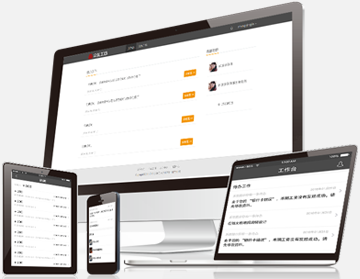

我们的教育模式
 学历+技能+职业化=成功就业
学历+技能+职业化=成功就业
计算机应用技术专业是我院重点高职专业之一, 以“校企联合培养"的方式确保毕业生高质量就业。计算机应用技术专业一直秉承“教育是服务”的办学宗旨，以“学历+技能+职业化=成功就业
”为教育模式致力于培养符合现代企业需求的专业软件开发人才。在教学中注重实践技能和职业素养培并, 通过大量的项目实战,培养学生的项目开发能力,通过职业表质课讲授现场模拟等方式
培养学生的基本职业素养,通过“时时教育”,开展各类校园及户外拓展活动,培养学生良好的习惯以及生活态度。历届毕业生都受到了用人单位的高度肯定。
”为教育模式致力于培养符合现代企业需求的专业软件开发人才。在教学中注重实践技能和职业素养培并, 通过大量的项目实战,培养学生的项目开发能力,通过职业表质课讲授现场模拟等方式
培养学生的基本职业素养,通过“时时教育”,开展各类校园及户外拓展活动,培养学生良好的习惯以及生活态度。历届毕业生都受到了用人单位的高度肯定。

课程体系
- 20%技术能力+ 80%职业素养=成功就业
大学生0.5年
- 基础
- 计算机基础
- 计算机操作系统
- 网络基础
- git/svn
- OFFice办公自动化